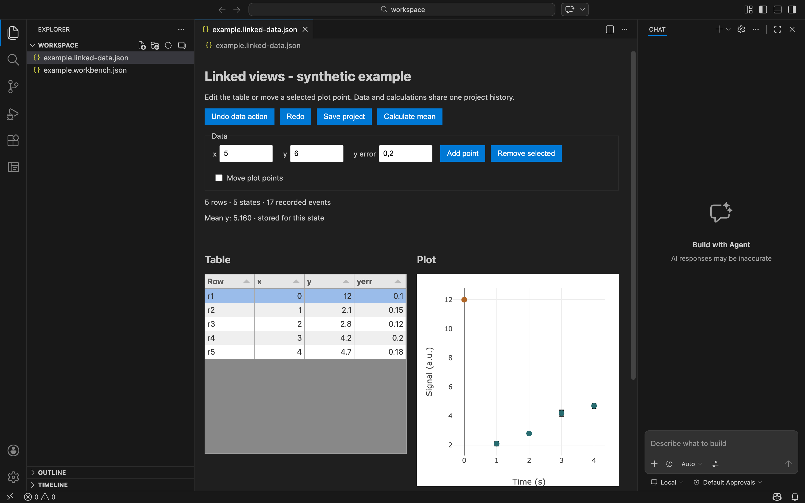

Linked data editor and checkpoints
A selectable editor package built from Tabulator, Plotly and Trrack, with one saved document for data, results and branching history.
The neutral workbench remains the default. An application can request the linked-data package through manifest schema 2. Schema 1 manifests continue to work. The first qualified combination is a local desktop table and scatter editor with persistent checkpoints; individual table-only, plot-only and independent journal packages remain future qualifications.
What this package does
- Edit numeric cells, add/remove rows and drag a selected plot point. The table and plot share stable row IDs and the same document.
- Refresh a mean calculation after a data edit. A result belongs to its input state; stale asynchronous results stay out of the current view.
- Undo and redo data actions, save a named checkpoint, restore an earlier state and continue on a new branch without deleting the later branch.
- Save and reopen the data, recorded actions, errors, named checkpoints and computed results in one
.linked-data.jsonfile. - Detect a changed on-disk file before saving over it. Validate project checksums and refuse unsupported document versions or executable imported history.
This is a small synthetic-data application slice. The mean demonstrates calculation lifecycle; it is not fitting, a GUM budget or Monte Carlo propagation. The y-error column contains supplied values. The file limit is 16 MiB and 10,000 history states; large-data performance and accessibility certification remain open.

Generate and run
python3 tools/compose_app.py generate apps/linked-workbench.json --output artifacts/instances/linked-workbench node --test artifacts/instances/linked-workbench/extension/linked-data/test/core.test.mjs python3 artifacts/instances/linked-workbench/scripts/run.py --host "/Applications/Visual Studio Code.app/Contents/MacOS/Electron"
Generation requires a new output directory. The canonical generated example is available locally. In the opened window, use Linked Workbench: Open Linked Data Example from the command palette. Edit a value, wait for its result, name a checkpoint and select Save checkpoint. Later, select that checkpoint and choose Restore checkpoint. A new edit continues a branch; save the project to retain it.
Normal launches install the generated extension into the application's isolated extension directory. They do not modify the user's normal editor profile. The test launcher uses extension-development mode, which is a distinct environment. The host and its retained services keep their own identity unless the generated source is built and packaged separately.
How it is assembled
| Part | Reused implementation | Project responsibility |
|---|---|---|
| Table and plot | Tabulator 6.6.1; Plotly.js basic 4.1.2 | Validated commands, linked selection and revision-aware rendering. |
| Branching history | Trrack core 1.6.1 | Named checkpoints, stored results, action/error records and portable document validation. |
| Editor lifecycle | VS Code CustomEditorProvider | Save, Save As, revert, backup and communication between the view and document. |
| Storage | Local filesystem atomic rename and synchronization | One-file checkpoints, checksum validation and detection of external file changes. |
The package uses its own persistent data undo/redo controls and scoped shortcuts. Ordinary text-editor undo is a different history. Restoring data does not erase previously recorded actions or undo an external effect. All renderer assets are bundled locally with pinned hashes and licence notices.
Qualification and limits
Automatic recovery of unsaved edits after a forced crash is not supported by the admission evidence. The tested reopen flow loaded the saved file instead. Save a project or named checkpoint explicitly. Provider backup tests and interrupted atomic-save tests passed, but do not establish automatic crash restoration. See the failed qualification record.
Read the qualification record for exact environments and checks. Evidence distinguishes pure document tests, editor-host tests, visible interactions and process restart. No general power-loss, network-filesystem, simultaneous-writer or cross-platform guarantee is claimed.
The generated package has been tested as an extension in desktop hosts; it is not a separately packaged and signed Linked Workbench distribution. The neutral app omits the package's renderer and history assets. Unsupported package names and duplicate requests fail instead of being silently ignored.
Git and later adapters
A Git round-trip test commits the actual portable project document, clones it and verifies its data, checkpoints and event history. Automatic commits, GitHub sign-in and remote synchronization are not added by this package. The inherited source-control facilities remain available for their own qualification.
Next, evaluate the publication adapter against this saved format and qualify a numerical adapter against reference cases. Keep these as separate offers. The reuse catalogue records candidates and the journal design records the broader requirements.